08/03/2025 — Bệnh nhân nữ được báo tin chồng qua đời: đây là OMI hay bệnh cơ tim do stress?
Bản dịch tiếng Việt của bài "Patient is informed of her husband’s death: is it OMI or it stress cardiomyopathy?" – Dr. Smith’s ECG Blog. Giữ nguyên toàn bộ 13 hình ảnh và 3 video của bản gốc.
Tác giả: Willy Frick
Xin nói rõ ngay từ đầu: Một số khía cạnh của ca này tôi chưa hoàn toàn rõ, và cách tiếp cận thì không thể biết chắc. Tôi đã trình bày ca bệnh theo cách tôi hiểu rõ nhất, nhưng tôi thấy cũng có những lập luận vững cho các cách diễn giải khác.
Một phụ nữ cuối độ tuổi 60 nhập viện sau một vụ tai nạn ô tô. Chồng bà lái xe và bà ngồi ghế hành khách. Xe của họ bị đâm ở tốc độ cao. Bà bị một khối máu tụ lớn ở da đầu cùng với gãy nhiều xương sườn và đốt sống, nhưng chụp CT ngực/bụng/chậu/cột sống cổ-ngực-thắt lưng và sọ não không phát hiện tổn thương nào đe dọa tính mạng. Bà than đau do các chấn thương. Điện tâm đồ đầu tiên của bà được trình bày dưới đây.

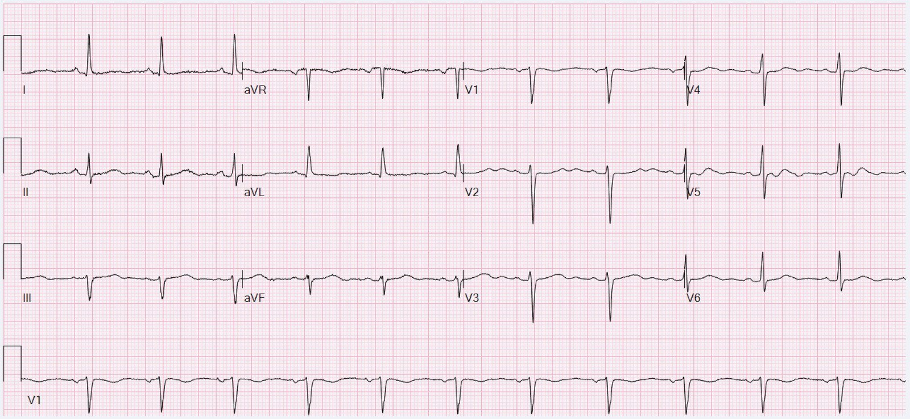
Nhìn chung không có gì đặc biệt. Nhịp xoang bình thường với bất thường ST không đặc hiệu. Sau khi ghi điện tâm đồ này, bác sĩ cấp cứu nhận được tin chồng bệnh nhân đã tử vong trong vụ tai nạn. Ông báo cho bệnh nhân tin dữ khủng khiếp này. Trong vòng mười phút, bà xuất hiện nhịp chậm, tụt huyết áp và thay đổi ST trên monitor. Dưới đây là hình ảnh trình bày một vài đoạn trích kèm mốc thời gian:

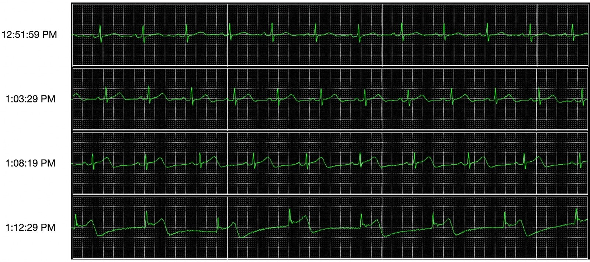
Nếu bạn muốn xem quá trình chuyển biến, tôi có đưa vào một video khi tôi cuộn qua bản ghi theo dõi từ xa (telemetry). Các thay đổi bắt đầu thấy rõ vào khoảng giây thứ 25 của video.
Điện tâm đồ ghi lại được thực hiện ngay lập tức, chỉ 24 phút sau điện tâm đồ trước:

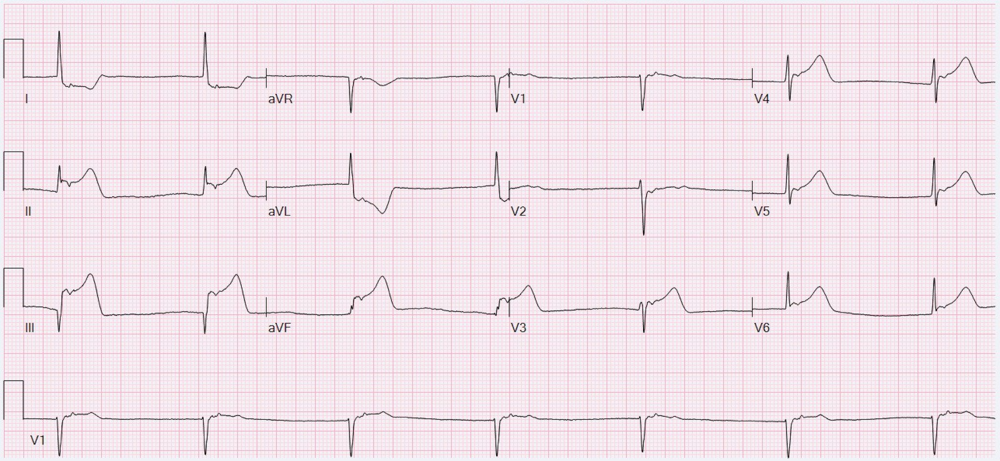
Trong bối cảnh này, chẩn đoán phân biệt hàng đầu của tôi sẽ là bệnh cơ tim do stress, còn gọi là takotsubo. Nhưng đó là một chẩn đoán loại trừ, và hiển nhiên phải loại trừ OMI với điện tâm đồ ấn tượng như thế này. Nếu đây là OMI, tôi sẽ nghiêng về thủ phạm là RCA đoạn gần (vì tổn thương này thường gây thay đổi ở thành dưới-bên và đôi khi gây sóng T tối cấp (HATW) ở thành trước do nhồi máu thất phải), nhưng LAD cũng có thể. Một điểm khác ủng hộ RCA là nhịp bộ nối. Nhịp chậm và blốc tim rất thường gặp trong OMI do RCA.
Bác sĩ cấp cứu lập tức kích hoạt phòng thông tim (cath lab). Trong phòng thông tim, bệnh nhân được theo dõi liên tục bằng điện tâm đồ rút gọn với 5 điện cực. Trong lúc nong bóng, chúng tôi thường thấy ngay sóng T tối cấp. Sau khi bung stent, chúng tôi thường thấy ST-T cải thiện trong vòng vài giây hoặc vài phút. Điện tâm đồ của bệnh nhân lúc bắt đầu thủ thuật được trình bày dưới đây.
1:45, bắt đầu thủ thuật

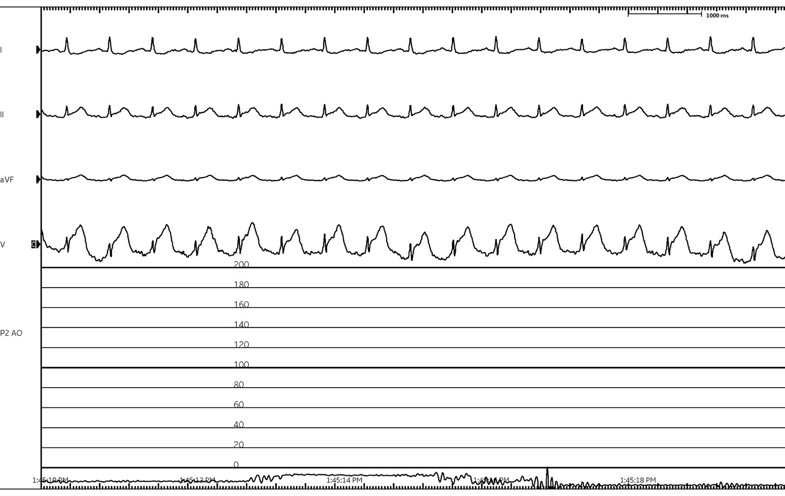
Để giúp bạn định hướng trên màn hình này, phần trên hiển nhiên là các dạng sóng điện tâm đồ. Bạn có thể thấy nhãn chuyển đạo ở bên trái, theo thứ tự từ trên xuống là I, II, aVF và V (một chuyển đạo trước tim duy nhất). Nửa dưới màn hình hiển thị áp lực động mạch. Lúc này nó chưa được nối, nên chỉ hiển thị một dạng sóng nhiễu sát mức không.
Để bàn luận chi tiết hơn về kết quả chụp mạch của bệnh nhân này và về chụp mạch nói chung, xin xem hướng dẫn chụp mạch của tôi. Các động mạch bên trái của bệnh nhân chỉ có bệnh lý nhẹ. Phim chụp RCA được trình bày dưới đây. Bạn sẽ thấy những điều sau:
Thứ nhất, thuốc cản quang làm đầy RCA và hệ nhánh sau-bên. Thứ hai, một khung hình dừng khi toàn bộ mạch đã cản quang, nhưng chưa thấy PDA. Thứ ba, một đoạn quay chậm cho thấy PDA được làm đầy muộn nhưng nhanh do một cục huyết khối bị bật ra khi bơm thuốc cản quang và trôi xuống gây thuyên tắc đoạn xa. Thứ tư, cùng đoạn phim đó được chiếu lại ở tốc độ bình thường.
Phim chụp mạch vành tư thế LAO chếch đầu (cranial) này cho thấy ít nhất ba dấu hiệu, được chú thích dưới đây:
- Một tổn thương ở lỗ xuất phát (ostial) (mũi tên đỏ), sẽ nói thêm ở phần dưới.
- Một tổn thương ở RCA đoạn xa (mũi tên xanh),
- PDA ban đầu bị tắc được làm đầy muộn nhưng nhanh do một cục huyết khối bị bật ra trong lúc bơm thuốc và trôi xuống gây thuyên tắc đoạn xa. Mũi tên vàng chỉ vào mỏm cụt của PDA trước khi cục huyết khối trôi đi, cho phép thuốc cản quang làm đầy mạch.

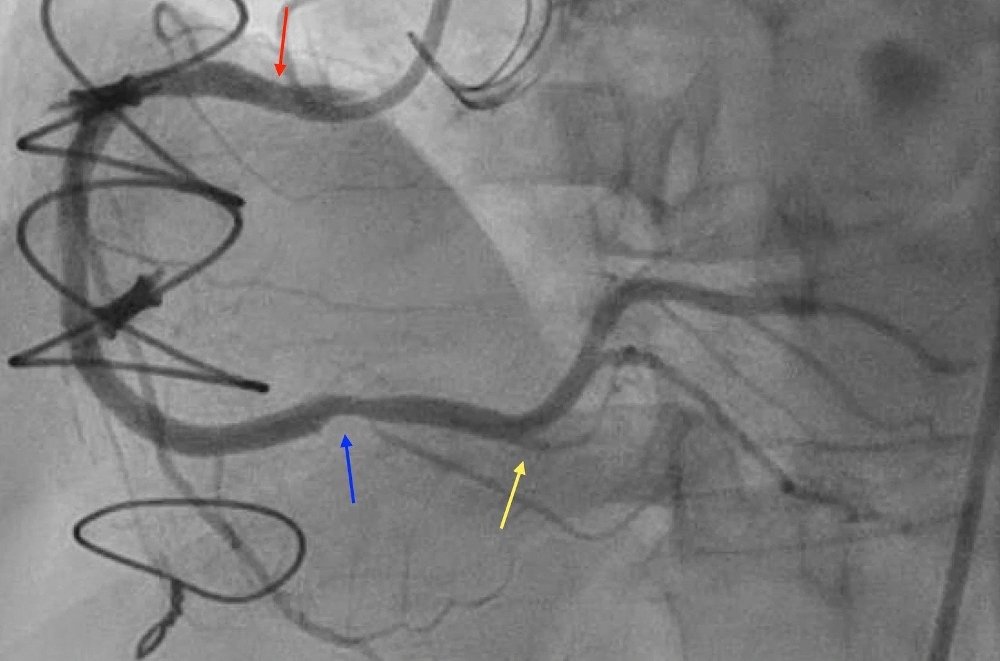
Mặc dù tổn thương ở lỗ xuất phát có thể trông không quá ấn tượng trên phim chụp mạch, vẫn có lý do để tin rằng nó nặng, dựa trên một quan sát trong phòng thông tim gọi là “giảm áp lực đầu ống thông” (pressure damping). Điều này cần giải thích một chút. Dạng sóng áp lực động mạch được ghi qua bộ chuyển đổi nhờ ống thông mạch vành. Bình thường, đường kính lỗ xuất phát động mạch vành lớn hơn nhiều so với đường kính ống thông, nên việc cài ống thông không làm giảm đáng kể tưới máu xuôi dòng của động mạch vành. Nhưng trong trường hợp có tổn thương ở lỗ xuất phát, gần như không còn khoảng trống giữa mặt ngoài ống thông và thành động mạch vành. Điều này cản trở dòng chảy xuôi dòng vào động mạch vành trong lúc cài ống thông, và hậu quả là áp lực ghi được giảm đáng kể so với huyết áp động mạch hệ thống.
Đây là điện tâm đồ và dạng sóng động mạch trong lúc chụp RCA. Lưu ý áp lực trên đường động mạch, ước tính 45/25 mm Hg.
1:51, chụp RCA chẩn đoán

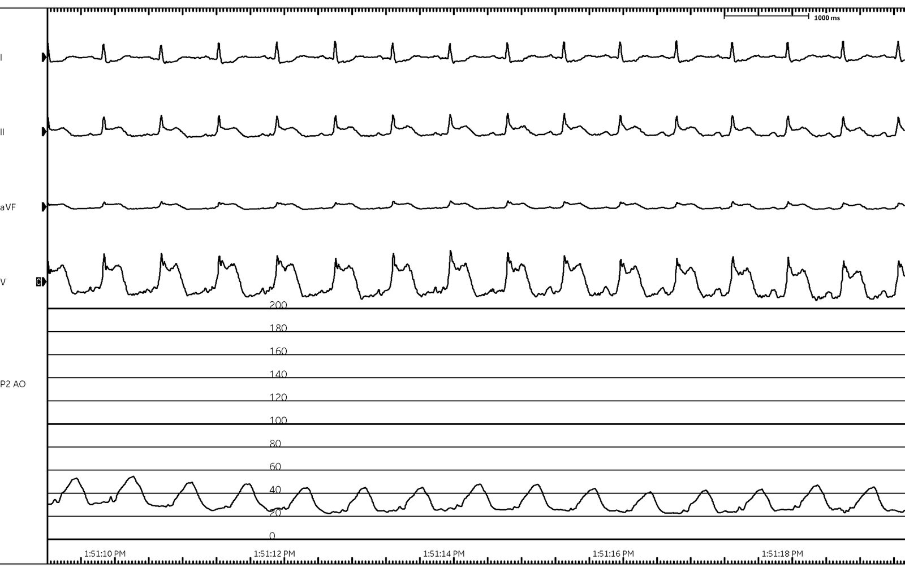
Đến thời điểm này, bệnh nhân rõ ràng đã có chẩn đoán OMI, đặc biệt vì chúng tôi đã thấy được thuyên tắc trong PDA. Nhưng liệu bệnh lý mạch vành có đủ để giải thích các thay đổi điện tâm đồ dai dẳng không? Đây là phim chụp mạch cuối cùng sau khi đặt stent ở lỗ xuất phát RCA.
2:04 chiều, sau khi bung stent

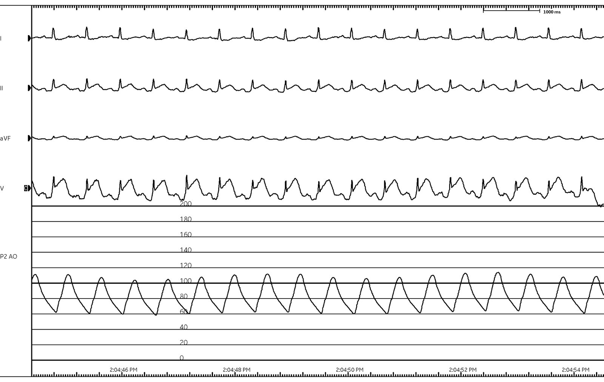
Bạn có thể thấy rằng ngay cả sau khi dòng chảy đã được khôi phục hoàn toàn, điện tâm đồ vẫn trông rất tệ, nhất là chuyển đạo V. Có thể có rối loạn chức năng vi mạch gây thiếu máu cục bộ xuyên thành còn sót lại. Nhưng điều này thường gặp nhất khi thiếu máu cục bộ kéo dài, còn bệnh nhân này được tái tưới máu nhanh nhất có thể tưởng tượng! Theo ý kiến của tôi, lời giải thích có khả năng hơn là các thay đổi ST-T chủ yếu do bệnh cơ tim do stress chi phối.
Đến lúc này, với dòng chảy TIMI 3 ở tất cả các mạch, bác sĩ tim mạch can thiệp tiến hành thông tim phải. Áp lực mao mạch phổi bít (wedge) của bệnh nhân là 18 mm Hg, với cung lượng tim và chỉ số tim bình thường theo phương pháp Fick ước tính. Sau khi hoàn tất thông tim phải, đoạn ST trên điện tâm đồ của bệnh nhân xấu đi. Ống thông đã được rút ra khỏi cơ thể và vị trí mở động mạch đã được đóng, nên không có dạng sóng áp lực.
2:34 chiều, sau thông tim phải

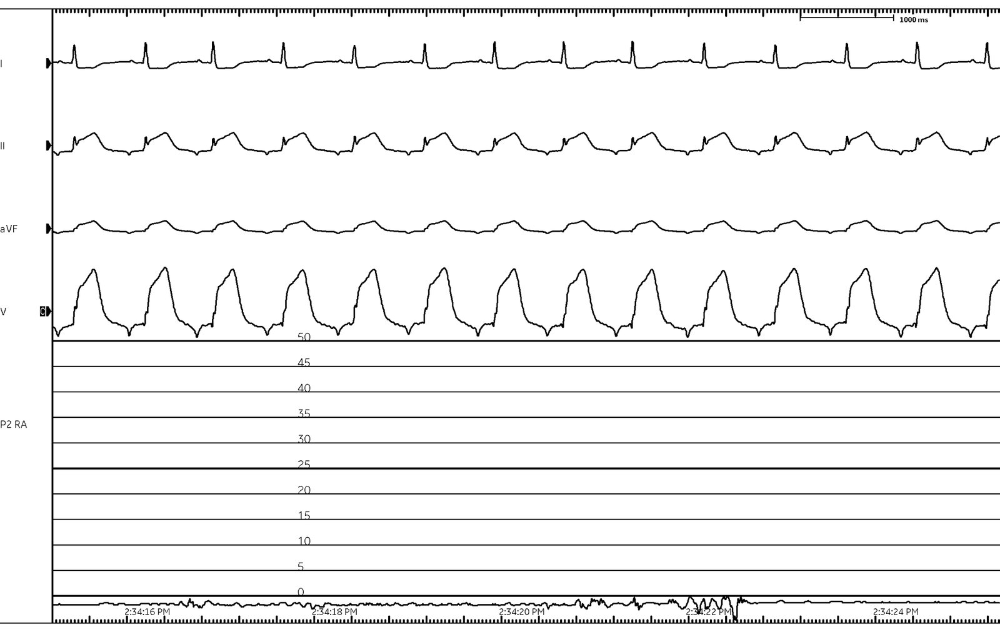
Sau đó bà chuyển sang rung nhĩ kèm blốc tim hoàn toàn và nhịp thoát bộ nối, buộc phải đặt máy tạo nhịp tạm thời qua đường tĩnh mạch.
2:38, rung nhĩ kèm blốc tim hoàn toàn

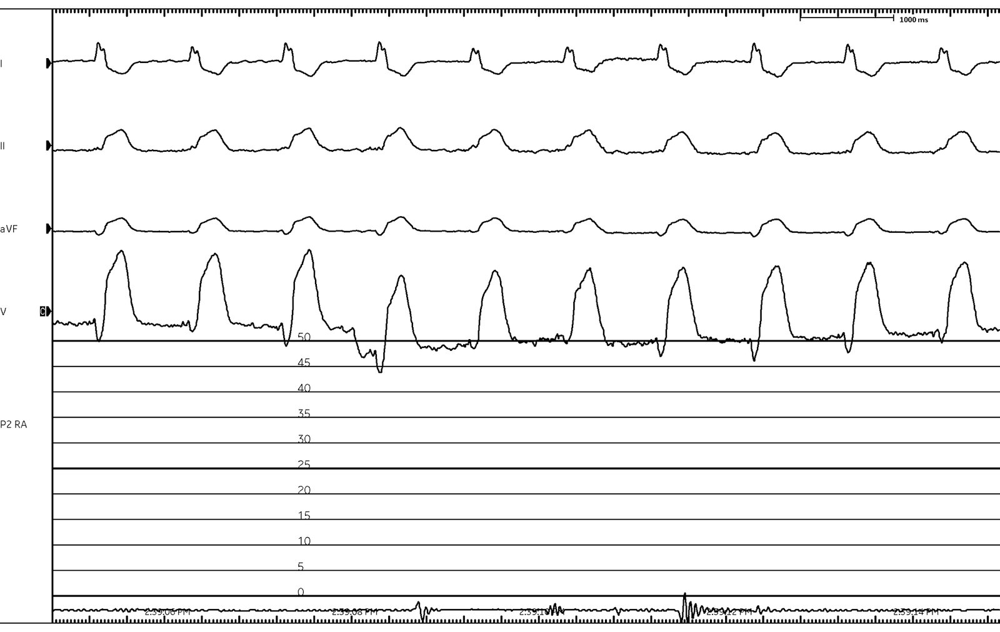
Do huyết động không ổn định, bác sĩ tim mạch đã đặt Impella và chuẩn bị chụp mạch lại. Giữa lúc đó, bà rơi vào rung thất (VF). Nhiều cú sốc 200 J không cắt được rung thất, nên một máy khử rung thứ hai được áp vào để khử rung kép liên tiếp (double sequential defibrillation) với 400 J. Bệnh nhân rơi vào bão điện (electrical storm) với rung thất tái phát. Trong quá trình hồi sức, bà được dùng amiodarone 450 mg tĩnh mạch, lidocaine 100 mg tĩnh mạch và magnesi 6 g tĩnh mạch. Bà đã được khử rung có lẽ tới 25 lần.
Việc chụp mạch gặp khó khăn về kỹ thuật vì bệnh nhân đang được hồi sinh tim phổi, nhưng bác sĩ tim mạch nghi ngờ huyết khối stent cấp và đã bắt đầu dùng cangrelor, dù không thể chụp mạch lại được. Đáng tiếc là ngay cả khi đã có Impella và khi bệnh nhân ở nhịp rung nhĩ đã được kiểm soát tần số, bà vẫn mất mạch.
3:07 chiều, rung nhĩ chậm kèm phân ly điện-cơ

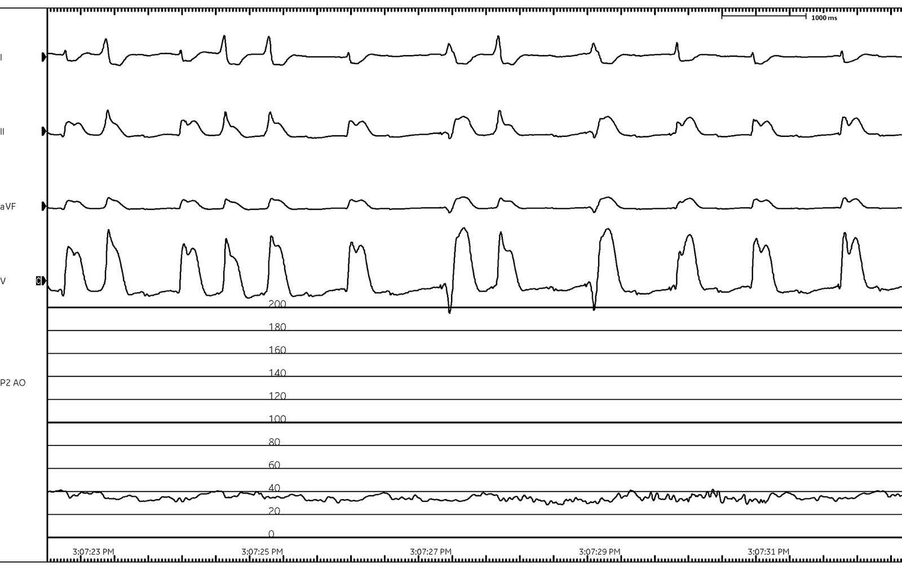
Lúc này, gia đình bệnh nhân quyết định dừng các nỗ lực hồi sức và bệnh nhân được tuyên bố tử vong.
Bàn luận ca bệnh:
Đây là một ca bệnh bi thảm. Bệnh nhân đã sống sót qua vụ tai nạn ô tô, nhưng khi biết tin chồng qua đời, tình trạng của bà xấu đi. Dù được tái thông mạch gần như ngay lập tức, bà vẫn có các bất thường ST-T dai dẳng và rõ rệt. Bác sĩ tim mạch cho rằng bà bị huyết khối stent, điều đó là có thể, nhưng tôi không nhất thiết cho rằng nó đủ để giải thích tình trạng suy sụp huyết động hoàn toàn của bà.
Chỉ vài tuần trước, tôi đã điều trị một bệnh nhân bị OMI do tắc lỗ xuất phát RCA (TIMI 0 khi thông tim) và than phiền duy nhất của ông ấy là ngất! Ông ấy không đau ngực, không khó thở hay bất kỳ triệu chứng tương đương đau thắt ngực nào khác, và các dấu hiệu sinh tồn bình thường.
Theo ý kiến của tôi, các thay đổi điện tâm đồ và tình trạng suy sụp huyết động dường như không tương xứng với bệnh lý mạch vành quan sát được/nghi ngờ. Ngoài ra, mốc thời gian gợi ý mạnh mẽ nguyên nhân do stress. Takotsubo điển hình xảy ra ở phụ nữ trong độ tuổi 60. Hiện nay đã được công nhận rộng rãi rằng nhồi máu cơ tim cấp có thể khởi phát takotsubo. Đây là một báo cáo ca bệnh kèm tổng quan y văn. Các tác giả mô tả một ca bệnh có một số đặc điểm chung với bệnh nhân của chúng tôi — một biến cố gây stress, sau đó là hội chứng chồng lấp giữa bệnh cơ tim do stress và nhồi máu cơ tim cấp. Bệnh nhân này không được chụp buồng thất trái (LVgram), nhưng ngay cả kết quả đó cũng có thể khó diễn giải nếu bệnh nhân có một trong các kiểu hình đã được công nhận khác với dạng mỏm tim phình dạng bóng kinh điển (ví dụ giữa thất, đáy, khu trú).
Khi tổng quan y văn, tôi thấy có nhiều bài báo cho rằng chứng minh được nguy cơ nứt vỡ mảng xơ vữa tăng cấp tính do stress cảm xúc, nhưng tôi không tìm được báo cáo ca bệnh đáng tin cậy nào mà khả năng là takotsubo không ít nhất là ngang bằng. Xin nhắn cho tôi trên Bluesky hoặc Twitter nếu bạn biết báo cáo ca bệnh nào như vậy. Dưới đây là một phần những gì tôi tìm được:
- Một báo cáo ca bệnh mô tả nhồi máu cơ tim cấp do stress nhưng theo ý kiến của tôi thì nhiều khả năng là takotsubo hơn (kể cả các thay đổi điện tâm đồ đặc trưng)
- Một bài tổng quan khẳng định vai trò của stress cảm xúc trong nứt vỡ mảng xơ vữa, và trích dẫn báo cáo ca bệnh nói trên cùng một vài nghiên cứu quần thể khó rút ra kết luận chắc chắn
- Một bài tổng quan khác với các trích dẫn tương tự
- Một nghiên cứu bệnh-chứng bề ngoài cho thấy nguy cơ nhồi máu cơ tim tăng sau khi người thân qua đời, nhưng không có dữ liệu chụp mạch và chính các tác giả cũng thừa nhận rằng có thể đã có takotsubo
- Một nghiên cứu tử thiết cho rằng stress có vai trò trong đột tử do tim do bệnh mạch vành, nhưng không chứng minh được rõ ràng
- Các tác giả này mô tả một ca hội chứng takotsubo biến chứng nghi huyết khối thất trái và OMI do huyết khối từ tim
Rốt cuộc, phần lớn cuộc bàn luận này không có ý nghĩa lâm sàng. Bệnh nhân chắc chắn đã bị OMI và đã được điều trị OMI. Không có điều trị đặc hiệu cho bệnh cơ tim do stress, chỉ có điều trị hỗ trợ. Liệu kết cục của bà có phải là điều có thể dự đoán với OMI do tắc lỗ xuất phát RCA? Hay nó không tương xứng, có lẽ bị làm nặng thêm bởi cơn bùng phát giao cảm? Chúng ta sẽ không bao giờ biết chắc.
Ngoài suy tim cấp nặng nề, bệnh nhân còn bị bão điện. Sau khi đã hoàn tất phác đồ ACS với amiodarone và lidocaine, các điều trị tiếp theo mang lại hiệu quả ngày càng giảm. Nếu có thể duy trì tạm thời cho bệnh nhân bằng VA ECMO, hãy cân nhắc propranolol hoặc phong bế hạch sao. Cả hai đều điều trị cơn bùng phát giao cảm, vốn là yếu tố thúc đẩy bão điện.
Những điểm cần học:
- Takotsubo và OMI có thể cùng tồn tại
- Nếu mức năng lượng tối đa của máy khử rung không cắt được VT, hãy thêm một máy khử rung khác
- Nếu amiodarone, lidocaine và magnesi không hiệu quả trong việc ức chế VT/VF, hãy cân nhắc VA ECMO hoặc propranolol
Tài liệu tham khảo:
Angulo‐Llanos, R., Sanz‐Ruiz, R., Solis, J., và Fernández‐Avilés, F. (2013). Acute myocardial infarction: an uncommon complication of takotsubo cardiomyopathy. Tạp chí Catheterization and Cardiovascular Interventions, 82(6), 909–913. https://doi.org/10.1002/ccd.24846
Bai, J., Xiang, W., Kong, L.-Y., Zhao, L.-T., Liu, F., Liu, L.-F., Tang, Z., và Zhang, P. (2022). Acute myocardial infarction complicated with takotsubo syndrome in an elderly patient: case report and literature review. Tạp chí Journal of Geriatric Cardiology, 19(6). https://doi.org/10.11909/j.issn.1671-5411.2022.06.007
Bentzon, J. F., Otsuka, F., Virmani, R., và Falk, E. (2014). Mechanisms of plaque formation and rupture. Tạp chí Circulation Research, 114(12), 1852–1866. https://doi.org/10.1161/circresaha.114.302721
Chatzidou, S., Kontogiannis, C., Tsilimigras, D. I., Georgiopoulos, G., Kosmopoulos, M., Papadopoulou, E., Vasilopoulos, G., và Rokas, S. (2018). Propranolol versus Metoprolol for treatment of electrical storm in patients with implantable cardioverter-defibrillator. Tạp chí Journal of the American College of Cardiology, 71(17), 1897–1906. https://doi.org/10.1016/j.jacc.2018.02.056
Cheskes, S., Verbeek, P. R., Drennan, I. R., McLeod, S. L., Turner, L., Pinto, R., Feldman, M., Davis, M., Vaillancourt, C., Morrison, L. J., Dorian, P., và Scales, D. C. (2022). Defibrillation strategies for refractory ventricular fibrillation. Tạp chí New England Journal of Medicine, 387(21), 1947–1956. https://doi.org/10.1056/nejmoa2207304
Falk, E., Shah, P. K., và Fuster, V. (1995). Coronary plaque disruption. Tạp chí Circulation, 92(3), 657–671. https://doi.org/10.1161/01.cir.92.3.657
Gelernt, M. D., và Hochman, J. S. (1992). Acute myocardial infarction triggered by emotional stress. Tạp chí The American Journal of Cardiology, 69(17), 1512–1513. https://doi.org/10.1016/0002-9149(92)90918-o
Ghadri, J.-R., Wittstein, I. S., Prasad, A., Sharkey, S., Dote, K., Akashi, Y. J., Cammann, V. L., Crea, F., Galiuto, L., Desmet, W., Yoshida, T., Manfredini, R., Eitel, I., Kosuge, M., Nef, H. M., Deshmukh, A., Lerman, A., Bossone, E., Citro, R., … Templin, C. (2018). International expert consensus document on takotsubo syndrome (part I): Clinical characteristics, diagnostic criteria, and pathophysiology. Tạp chí European Heart Journal, 39(22), 2032–2046. https://doi.org/10.1093/eurheartj/ehy076
Jentzer, J. C., Noseworthy, P. A., Kashou, A. H., May, A. M., Chrispin, J., Kabra, R., Arps, K., Blumer, V., Tisdale, J. E., và Solomon, M. A. (2023). Multidisciplinary critical care management of electrical storm. Tạp chí Journal of the American College of Cardiology, 81(22), 2189–2206. https://doi.org/10.1016/j.jacc.2023.03.424
Mostofsky, E., Maclure, M., Sherwood, J. B., Tofler, G. H., Muller, J. E., và Mittleman, M. A. (2012). Risk of acute myocardial infarction after the death of a significant person in one’s life. Tạp chí Circulation, 125(3), 491–496. https://doi.org/10.1161/circulationaha.111.061770
Myers, A., và Dewar, H. A. (1975). Circumstances attending 100 sudden deaths from coronary artery disease with coroner’s necropsies. Tạp chí Heart, 37(11), 1133–1143. https://doi.org/10.1136/hrt.37.11.1133
Park, J., Choi, K. H., Lee, J. M., Kim, H. K., Hwang, D., Rhee, T., Kim, J., Park, T. K., Yang, J. H., Song, Y. B., Choi, J., Hahn, J., Choi, S., Koo, B., Chae, S. C., Cho, M. C., Kim, C. J., Kim, J. H., Jeong, M. H., … Kim, H. (2019). Prognostic implications of Door‐to‐balloon time and onset‐to‐door time on mortality in patients with st‐segment–elevation myocardial infarction treated with primary percutaneous coronary intervention. Tạp chí Journal of the American Heart Association, 8(9). https://doi.org/10.1161/jaha.119.012188
Singh, T., Khan, H., Gamble, D. T., Scally, C., Newby, D. E., và Dawson, D. (2022). Takotsubo syndrome: Pathophysiology, emerging concepts, and clinical implications. Tạp chí Circulation, 145(13), 1002–1019. https://doi.org/10.1161/circulationaha.121.055854

===================================
BÌNH LUẬN CỦA TÔI, bởi KEN GRAUER, MD (8/3/2025):
===================================
Nếu bạn tìm trên Google cụm từ “Broken Heart Syndrome” (hội chứng trái tim tan vỡ) — bạn sẽ ngay lập tức thấy dẫn chiếu tới nhiều trang tin vắn và tài liệu thông tin “Giáo dục bệnh nhân”, trong đó các câu hỏi được đặt ra là: “Có thật sự có thể chết vì trái tim tan vỡ không?” — và nếu có, thì “Điều này có thể xảy ra như thế nào?”.
- Câu trả lời là CÓ, bạn có thể chết vì “hội chứng trái tim tan vỡ” — như được minh chứng một cách bi thảm trong ca bệnh hôm nay do bác sĩ Frick trình bày.
Hội chứng này được xác định lần đầu tiên vào năm 1990 — và ban đầu được gọi là bệnh cơ tim “Takotsubo” (TCM) vì hình dạng của tim trên phim chụp buồng thất giống với hình dạng chiếc bình mà ngư dân Nhật Bản dùng để bẫy bạch tuộc.
- Như minh họa trong Hình 1 — thiết kế đáy tròn và cổ hẹp khác thường của chiếc bình takotsubo tương tự với các dấu hiệu trên phim thông tim, biểu hiện bằng mỏm tim phình dạng bóng kèm tăng co bóp ở vùng đáy.
- Sau đó hội chứng này có thêm nhiều tên gọi khác — bao gồm bệnh cơ tim “do stress” (Stress CM) — “hội chứng mỏm tim phình dạng bóng” (Apical Ballooning Syndrome) — và tên gọi trên báo chí phổ thông là hội chứng “trái tim tan vỡ” (Broken Heart Syndrome).
- Kể từ đó, nhiều biến thể về vị trí tổn thương của tim đã được mô tả. Thay vì rối loạn chức năng thất trái khu trú ở mỏm — rối loạn chức năng có thể ở vùng đáy = Takotsubo “đảo ngược” , khi đó sẽ không có hình ảnh mỏm tim phình dạng bóng. Hoặc có thể có Takotsubo giữa thất , trong đó vùng giữa thất trái co bóp kém (và phình dạng bóng), còn cả vùng đáy lẫn mỏm vẫn co bóp tốt — và còn những khả năng giải phẫu khác nữa (Xem bài ngày 24 tháng Sáu năm 2014 — và Bình luận của tôi trong bài ngày 21 tháng Bảy năm 2022 trên Dr. Smith’s ECG Blog về các kiểu hình biến thể của Takotsubo).
- Và, như thường xảy ra với các hội chứng lâm sàng “mới được mô tả” — một khi chúng xuất hiện trong y văn, hội chứng ngày càng được nhận biết nhiều hơn (trong khi có lẽ nó vẫn luôn tồn tại với một tần suất chưa xác định). Vì vậy, thực thể CM do stress không phải là “một cỡ vừa cho tất cả” — mà bao gồm cả một phổ các biểu hiện về giải phẫu (và do đó cả về điện tâm đồ).
- Mặc dù cơ chế chính xác của thực thể này vẫn chưa rõ — mẫu số chung dường như là tình trạng giao cảm hoạt động quá mức (dư thừa catecholamine), với ưu thế rõ rệt ở phụ nữ sau mãn kinh — trong đó thực thể này thường được khởi phát bởi stress cảm xúc hoặc thể chất mạnh. Dù vậy — nhiều ca không đơn giản như thế, và tôi thấy mình vừa xúc động về mặt cảm xúc — vừa bị cuốn hút về mặt trí tuệ bởi chuỗi diễn biến trong ca bệnh hôm nay.

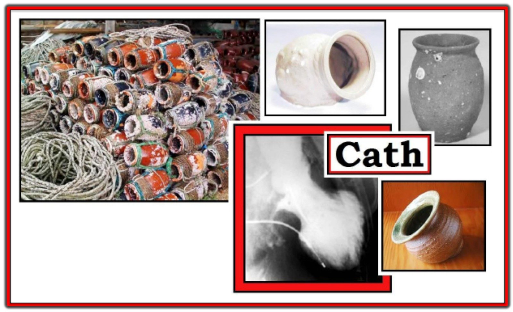
==================================
SUY NGHĨ CỦA TÔI về CA BỆNH hôm nay:
Mặc dù chúng ta không biết chi tiết về mối quan hệ giữa bệnh nhân hôm nay (một phụ nữ cuối độ tuổi 60) và chồng bà — tôi dễ dàng hình dung ra một cuộc hôn nhân kéo dài nhiều thập kỷ, trong đó bệnh nhân, khi chính bà đang được điều trị các chấn thương nặng nhưng không đe dọa tính mạng — đột nhiên biết tin người bạn đời trọn kiếp của mình đã qua đời trong vụ tai nạn ô tô.
- Xét đến “phản ứng dây chuyền” sinh lý tức thì của tình trạng rối loạn thần kinh tự chủ dữ dội xảy ra sau khi bà biết tin chồng qua đời (và cuối cùng đã dẫn đến cái chết của bệnh nhân này) — tôi không khỏi tự hỏi KHI NÀO (và Bằng cách nào?) là tốt nhất để báo tin khủng khiếp rằng một người thân yêu vừa qua đời trong chính vụ tai nạn vừa xảy ra?
- Rõ ràng — “phản ứng dây chuyền” sinh lý của rối loạn thần kinh tự chủ thấy trong ca hôm nay không thường dẫn đến tử vong ở người nhận tin này. Nhưng nếu phải đối mặt với một quyết định tương tự trong tương lai — tôi tự hỏi, liệu vì lợi ích của tình trạng y khoa của bệnh nhân — có lẽ tốt hơn là không báo ngay tin người thân qua đời trong cùng vụ tai nạn cho đến khi bệnh nhân ở trạng thái có khả năng tiếp nhận điều đã xảy ra tốt hơn. Tôi không biết câu trả lời cho điều này.
Liên quan đến “Phản ứng dây chuyền” sinh lý …
- Như bác sĩ Frick đã nói — Chúng ta không có tất cả các câu trả lời. Thông tim có vẻ cho thấy một mức độ rối loạn chức năng thất, dù không phải là các dấu hiệu điển hình của bệnh cơ tim Takotsubo (rất khó làm thủ thuật trong khi bệnh nhân đang được hồi sinh tim phổi …).
- Điều đã biết — là điện tâm đồ ghi lại trong ca hôm nay (trình bày trong Hình 2) — gợi ý tình trạng phó giao cảm hoạt động quá mức nghiêm trọng.
- Trong khi điện tâm đồ ban đầu của bệnh nhân cho thấy nhịp xoang và bất thường ST-T không đặc hiệu — chỉ 24 phút sau, giờ đây đã có nhịp chậm nghiêm trọng với nhịp thoát bộ nối (các mũi tên VÀNG chỉ ra sóng P ngược dòng) — và các dấu hiệu rõ ràng của STEMI thành dưới cấp.
- ST chênh lên rõ rệt ở các chuyển đạo thành dưới (ở chuyển đạo III lớn hơn ở chuyển đạo II) — cùng với ST chênh xuống soi gương rõ rệt tương đương ở chuyển đạo aVL gợi ý “thủ phạm” là RCA — dù các đoạn ST dẹt bất thường ở V1,V2 (tổn thương thất phải và thành sau triệt tiêu lẫn nhau?) cùng ST chênh lên từ V3-đến-V6 cho thấy một bức tranh phức tạp.
Tình trạng bệnh nhân xấu đi. Như bác sĩ Frick đã nói — các thay đổi điện tâm đồ tiếp diễn đi kèm với suy sụp huyết động dường như không tương xứng với bệnh lý mạch vành biểu hiện ra.
- Đã có dấu hiệu của tình trạng phó giao cảm hoạt động quá mức (STEMI thành dưới cấp với nhịp chậm nghiêm trọng và nhịp thoát bộ nối).
- Tình trạng này sau đó bị lấn át bởi ưu thế của cơn bùng phát giao cảm (nhịp nhanh, ST chênh lên dai dẳng — xuất hiện “bão” điện không đáp ứng với khử rung lặp lại).
- Có lẽ tóm lại tốt nhất là một ca bi thảm của rối loạn thần kinh tự chủ cực độ, được khởi phát bởi stress tâm lý quá sức chịu đựng, vượt quá cả những nỗ lực điều trị tích cực nhất.

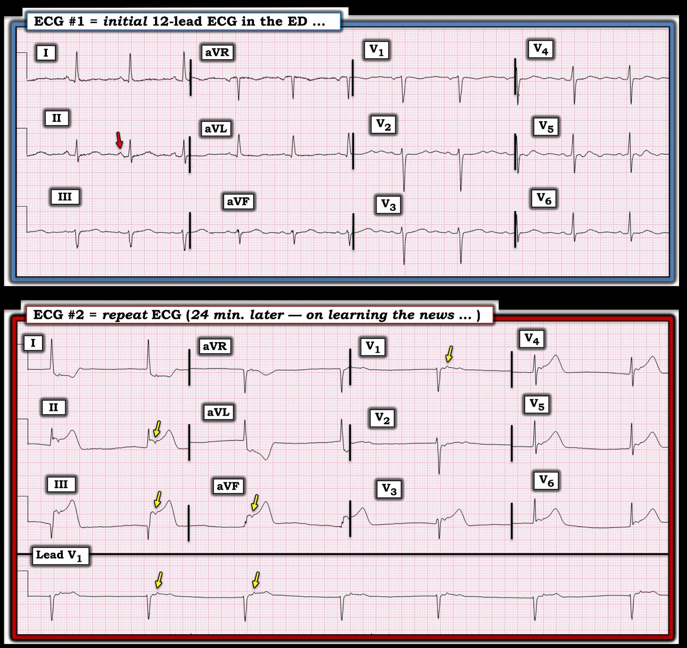